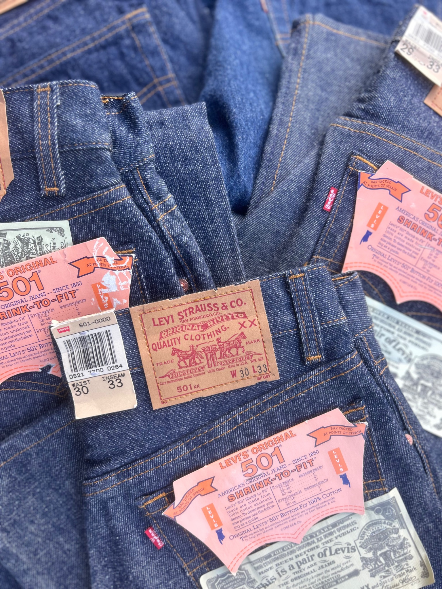
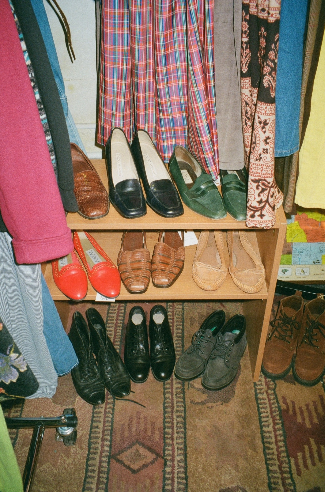
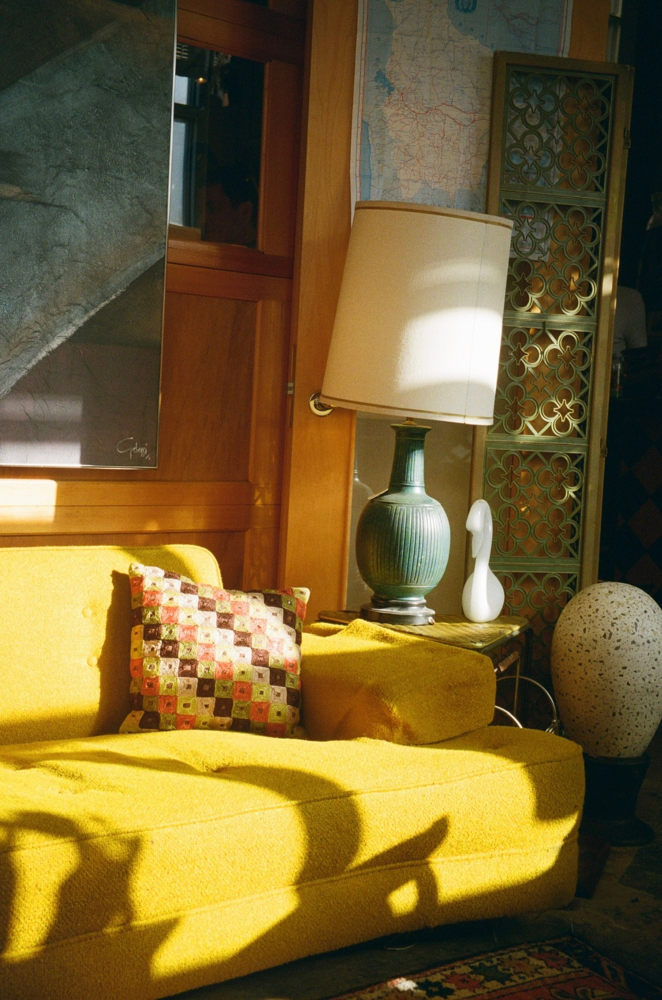

Vintage Denim & Clothing
Discover classic denim, everyday staples, and standout clothing from past decades. From worn-in jeans to unique pieces that express personal style, vintage clothing brings something different to a wardrobe.

Vintage Footwear
Browse shoes and boots with timeless silhouettes and distinctive details. Vintage footwear adds character to an outfit and offers styles that are harder to find in modern stores.

Furniture & Home Goods
Explore furniture, artwork, lighting, and decorative objects that bring warmth and personality into a space. The selection includes pieces inspired by the shapes and materials of past eras.